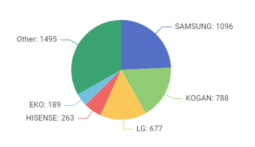

Appliance Energy Consumption in Australia
Applying Storyboard Data Frameworks to Help Australian Households Make Smarter, Cost-Effective TV Purchases.
4,508
Registered Models Analyzed (Exercise 2)
158.11 kWh
Avg Power (Small ≤43")
404.68 kWh
Avg Power (Medium 44"-65")
748.88 kWh
Avg Power (Large ≥66")
The Storyboard Approach to TV Shopping
Choosing an appliance shouldn't be about buying the biggest display on the store shelf. Following our structured 6-stage storyboard narrative, we analyze how right-sizing your display saves electricity, reduces living room clutter, and protects your long-term household budget.
Modern households often underestimate the passive energy consumption of large screens. By evaluating screen size against yearly power draw (kWh/year), our framework equips buyers with practical, data-backed guidance.
Why Right-Sizing Your TV Matters
Financial Savings
Cut your TV electricity bill by up to 79% annually simply by selecting a screen that fits your actual room needs.
Visual Comfort
Prevent eye strain and visual fatigue caused by sitting too close to an oversized, ultra-bright screen.
Space Optimization
Maintain balanced interior aesthetics without a giant dark panel dominating your living space or bedroom.
Lower Footprint
Reduce household carbon emissions by consuming less power continuously throughout the year.
Household Energy Cost Estimator
Based on an average Australian electricity rate of 29.82¢ per kWh ($0.2982 AUD) (assuming standard 10-year lifespan):
| TV Size Category | Avg Annual kWh | Est. Annual Cost ($ AUD) | Est. 10-Year Running Cost |
|---|---|---|---|
| Small (≤ 43") | 158.11 kWh | $47.15 | $471.50 |
| Medium (44" – 65") | 404.68 kWh | $120.68 | $1,206.80 |
| Large (≥ 66") | 748.88 kWh | $223.32 | $2,233.20 |
Choosing a small screen instead of a large screen saves your household over $1,750 AUD in electricity costs over a 10-year lifespan!
Market Concentration Across Australian Brands
Our analysis of registered television models in Australia reveals heavy concentration among key manufacturing brands:

- Samsung: 1,096 models (24.31% market share)
- Kogan: 788 models (17.48% market share)
- LG Electronics: 677 models (15.02% market share)
- Hisense & EKO: Combined 452 models (10.03% market share)
4 Simple Ways to Reduce TV Power Usage
- Lower Backlight / Screen Brightness: Standard factory modes set brightness to maximum. Reducing brightness to 70% cuts power consumption by up to 20%.
- Enable Ambient Light Sensors: Eco-sensors automatically adjust backlight intensity based on ambient room light.
- Disable Always-On Standby Features: Features like "Quick Start" or standby wake-on-LAN keep interior chips active, drawing continuous power 24/7.
- Use Sleep Timers: Prevent screens from running idle overnight when falling asleep.
Frequently Asked Questions
Q: How much energy does a typical Australian TV use?
A: It ranges significantly based on size. Small TVs (≤43") average 158.11 kWh per year, while Large TVs (≥66") average 748.88 kWh per year.
Explore the Full Storyboard Narrative
Discover why smaller screens deliver big savings, superior room integration, and optimal visual comfort. Read our full 6-stage data story on the Televisions Page.
Your text goes here